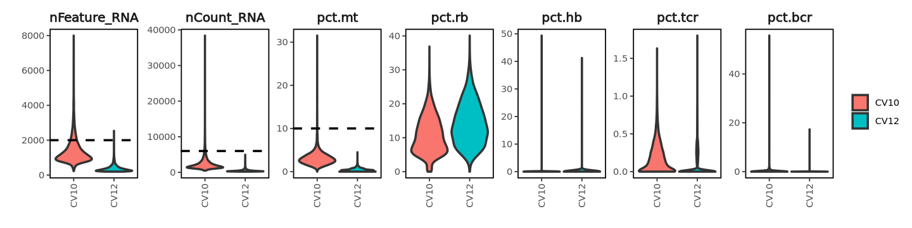
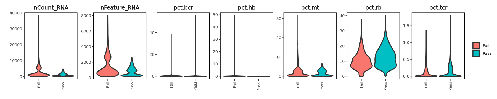

Before futher analysis, identifying and removing poor quality cells is a critical step to ensure quality of the data and prevent misinformative results. nFeature/nCount and the fraction of mitochondrial, ribosomal, haemoglobin, T/B-cell recepter (TCR/BCR) reads are crucial parameters to indicate poor quality cells.
High nFeature/nCount usually indicates doublets, whilst the opposite usually indicates negative cells (empty droplets).
High mitochondrial fractions is a typical characteristic of apoptotic cells in scRNAseq data.
High ribosomal indicates poor sample quality.
High haemoglobin fractions suggests RBC contamination.
Aim
Run wrapper functions to calculate the fraction of mitochondrial, ribosomal, haemoglobin, T/B-cell recepter (TCR/BCR) reads.
Remove VDJ genes if your interests are T-cells and B-cells.
Set hard and soft filter thresholds to remove negative cells and doublets
6.1 Setup
# set up environmentsuppressMessages({library(scUnify)library(clustree)setwd("/nemo/lab/caladod/working/Matthew/project/matthew/MH_GSE247917")})# import seurat objectobj <-qread("seurat/1_processing/1.3_GSE247917_demux.qs")
Warning message:
“replacing previous import ‘cowplot::get_legend’ by ‘ggpubr::get_legend’ when loading ‘scUnify’”
Warning message:
“replacing previous import ‘cowplot::align_plots’ by ‘patchwork::align_plots’ when loading ‘scUnify’”
Warning message:
“replacing previous import ‘biomaRt::select’ by ‘rstatix::select’ when loading ‘scUnify’”
Warning message:
“replacing previous import ‘scales::viridis_pal’ by ‘viridis::viridis_pal’ when loading ‘scUnify’”
6.2 Calculate Gene Fractions
The function below will perform the calculations of key quality control parameters for every cell but will not filter any cells yet. This is done by calculating the no. of selected reads over the no. of total reads for every cell.
calculate_fractions <-function(x){ x <-PercentageFeatureSet(x, pattern ="^[Mm][Tt]-", col.name ="pct.mt") x <-PercentageFeatureSet(x, pattern ="^R[Pp][SsLl]", col.name ="pct.rb") x <-PercentageFeatureSet(x, pattern ="^H[ABGH][A-Z]?\\d*$|^H[abgh][a-z]?\\d*", col.name ="pct.hb") x <-PercentageFeatureSet(x, pattern ="^T[Rr][ABCDGabcdg][VDJCvdjc]", col.name ="pct.tcr") x <-PercentageFeatureSet(x, pattern ="^I[Gg][HKLhkl][VDJCAEMGvdjcaemg]", col.name ="pct.bcr") x <-PercentageFeatureSet(x, pattern ="^HLA-|^H2-", col.name ="pct.mhc")return(x)}
# run calculate gene fractions if haven't done so alreadyobj <-calculate_fractions(obj)
6.3 Remove VDJ Genes
In the case of T/B-cells, removing VDJ genes could be critical prior to subsequence steps to avoid cell clustering by VDJ genes, especially by isotype such as IgG and IgM for B-cells. Below is a wrapper function to remove VDJ genes from the Seurat object.
Warning
Before removing VDJ genes, please run Seurat::NormalizeData() to ensure library size is normalized with VDJ genes included.
# normalize counts and remove both TCR and BCR vdj genes obj <-NormalizeData(obj)obj <-remove_vdj_genes(obj, bcr = T, tcr = T)
Normalizing layer: counts
Warning message:
“Different cells and/or features from existing assay RNA”
Warning message:
“Different cells and/or features from existing assay RNA”
6.4 Setting QC Filters
Following Section 6.2, we will now set thresholds to remove poor quality cells mentioned above. There are generally 2 approaches - either hard and soft threshold could be set to remove cells. The difference between the methods is that using a soft threshold means that you are defining poor quality cells based on the distribution of the population, which ensures a good proportion of cells will remain and hopefully are the cells of interest. Generally we recommend using a soft threshold for quality control, especially in the case where users have multiple sequencing runs, as these threshold may subject to change depending on cell populations, batch effects etc.
For both approaches, a threshold is set for the following essential quality control parameters, including nFeatures_RNA, nCount_RNA, mitochondrial, haemoglobin fraction. Typically mitochondrial fraction threshold is set at 10% for human and 5% for mouse.
Warning
If VDJ genes were removed earlier, recalculating nFeature and nCount is critical to remove cells that only contain VDJ genes which are likely empty droplets contaminated with RNA. This was done automatically in the Seurat object when VDJ were first removed.
# visualize each quality control parameter for each sequencing runoptions(repr.plot.width=12, repr.plot.height=3)cols <-c("nFeature_RNA", "nCount_RNA", "pct.mt", "pct.rb", "pct.hb", "pct.tcr", "pct.bcr")obj@meta.data %>%pivot_longer(cols =all_of(cols), names_to ="measures", values_to ="values") %>%mutate(measures =factor(measures, cols)) %>%ggplot(aes(x = samples, y = values, fill = samples)) +geom_violin(size =1, scale ="width", bw ="nrd0", position=position_dodge(0.75), trim = T, drop = F, adjust =1.5) +facet_wrap(~ measures, scales ="free", ncol =7) +theme_bw() +theme(axis.text.x =element_text(angle =90, vjust =0.5, hjust=1)) +guides(fill =guide_legend(title ="")) +xlab("") +ylab("") +theme_border() +facet_aes()
Warning message:
“Using `size` aesthetic for lines was deprecated in ggplot2 3.4.0.
ℹ Please use `linewidth` instead.”
6.4.1 Set Hard Threshold
Given both our sequencing runs contain the similar composition of cells and distributions of the quality control parameters, we can apply the same hard thresholds to both runs.
# visualize each quality control parameter for each sequencing runoptions(repr.plot.width=12, repr.plot.height=3)cols <-c("nFeature_RNA", "nCount_RNA", "pct.mt", "pct.rb", "pct.hb", "pct.tcr", "pct.bcr")obj@meta.data %>%pivot_longer(cols =all_of(cols), names_to ="measures", values_to ="values") %>%mutate(measures =factor(measures, cols)) %>%## define hard thresholdmutate(yintercept =case_when( measures =="nCount_RNA"~6000, measures =="nFeature_RNA"~2000, measures =="pct.mt"~10,.default =NULL)) %>%ggplot(aes(x = samples, y = values, fill = samples)) +geom_violin(size =1, scale ="width", bw ="nrd0", position=position_dodge(0.75), trim = T, drop = F, adjust =1.5) +facet_wrap(~ measures, scales ="free", ncol =7) +geom_hline(aes(yintercept = yintercept), color ="black", linetype ="dashed", size =1) +theme_bw() +theme(axis.text.x =element_text(angle =90, vjust =0.5, hjust=1)) +guides(fill =guide_legend(title =""), color =guide_none()) +xlab("") +ylab("") +theme_border() +facet_aes()
Warning message:
“Removed 147400 rows containing missing values or values outside the scale range
(`geom_hline()`).”

After visualization we removed cells based on the following criteria :
nCount_RNA > 6000
nFeature_RNA < 200 or > 2000
pct.mt > 10%
pct.hb > 0%
> 45% cells remains from each sequencing run after quality control filter by hard threshold.
45.5% (8859) of cells remains - CV10
85.9% (14912) of cells remains - CV12
# visualize the quality control parameters for good/poor quality cellsoptions(repr.plot.width=15, repr.plot.height=3)cols <-c("nFeature_RNA", "nCount_RNA", "pct.mt", "pct.rb", "pct.hb", "pct.tcr", "pct.bcr")obj@meta.data %>%pivot_longer(cols =all_of(cols), names_to ="measures", values_to ="values") %>%mutate(measures =factor(measures, cols)) %>%ggplot(aes(x = hardqc, y = values, fill = hardqc)) +geom_violin(size =1, scale ="width", bw ="nrd0", position=position_dodge(0.75), trim = T, drop = F, adjust =1.5) +facet_wrap(~measures, scales ="free", ncol =7) +guides(fill =guide_legend(title ="")) +theme(axis.text.x =element_text(angle =90, vjust =0.5, hjust=1)) +xlab("") +ylab("") +theme_border() +facet_aes()
6.4.2 Set Soft Threshold
As a comparison, we will perform soft threshold cutoff to remove outlier (poor quality) cells based on population distribution. To do so, we have adapted the median absolute deviation (MAD) method [see details] to determine outlier cells from each sample based on the quality control filter mentioned above. Below is a wrapper function to calculate thresholds for the specified quality control parameters within 5 MAD deviations and determine outlier cells. Note the function does not perform the filtering yet.
> 85% cells remains from each sample after quality control filter by soft threshold.
83.4% (16246) of cells remains - CV10
81.2% (14106) of cells remains - CV12
# visualize the quality control parameters for good/poor quality cellsoptions(repr.plot.width=15, repr.plot.height=3)cols <-c("nFeature_RNA", "nCount_RNA", "pct.mt", "pct.rb", "pct.hb", "pct.tcr", "pct.bcr")obj@meta.data %>%pivot_longer(cols =all_of(cols), names_to ="measures", values_to ="values") %>%ggplot(aes(x = softqc, y = values, fill = softqc)) +geom_violin(size =1, scale ="width", bw ="nrd0", position=position_dodge(0.75), trim = T, drop = F, adjust =1.5) +facet_wrap(~measures, scales ="free", ncol =7) +guides(fill =guide_legend(title ="")) +theme(axis.text.x =element_text(angle =90, vjust =0.5, hjust=1)) +xlab("") +ylab("") +theme_border() +facet_aes()

6.4.3 Inspect QC Results
Given the variability of the 2 sequencing runs, we will move forward with the soft (adaptive) threshold filters to take into account. Here we will do a final inspection to ensure we are keeping the high quality cells.
In general, you may wish to remove the negative cells and doublets at this stage after quality control. However if you are planning to use Doublet Detection algorithms (in this case we are, see [@chapter-doublets]), please do not remove any cells at this stage as influence the proportion of doublets being called. You can remove the negative cells and doublets all together after running the doublet detection algorithms.
Combining the soft threshold filters together with outputs from MULTIseqDemux in the previous chapter, we will inspect the no. of negative and doublets detected at this stage.
> ~35% of cells remain from each sample after all quality control filters.
# make a column of cells to keep, putting together outputs from multiseqdemux and quality control, but do not remove cellsobj@meta.data <- obj@meta.data %>%mutate(finalqc =ifelse( MULTI.global =="Singlet"& softqc =="Pass", "Pass", "Fail"))qc_report(obj, column ="finalqc", sample ="samples")
70.9% (13822) of cells remains - CV10
35% (6072) of cells remains - CV12
## run the code below to remove cells# obj <- subset(obj, subset = finalqc == "Pass")